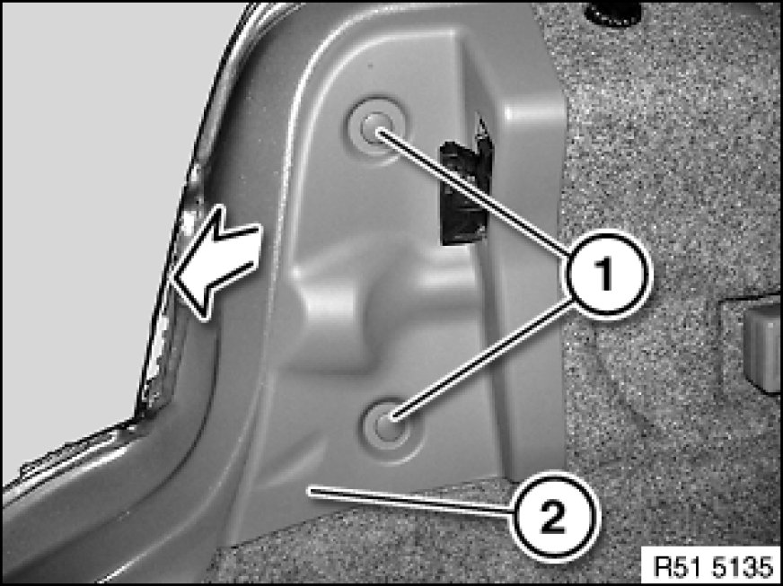
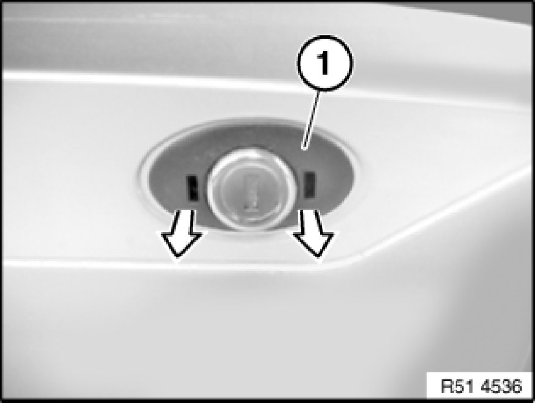
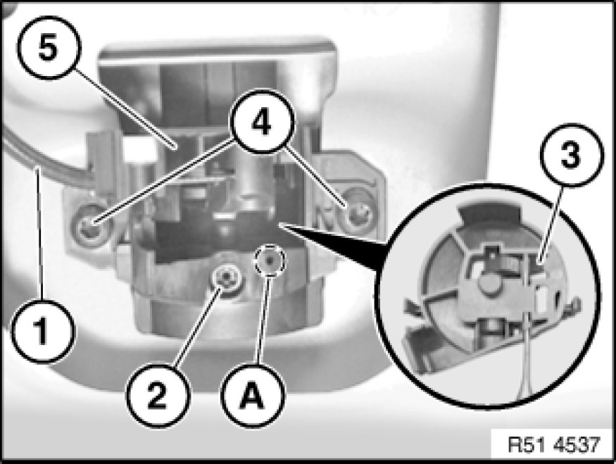
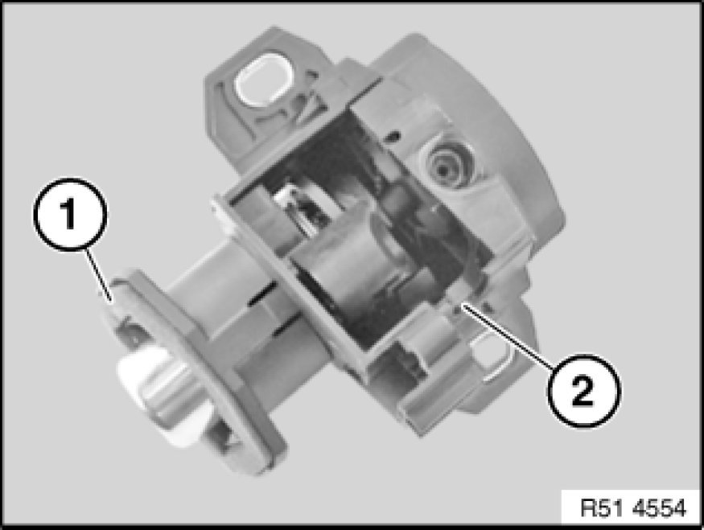

Trunk / Liftgate Lock Cylinder: Service and Repair
51 24 050 - Removing and installing/replacing lock element (lock cylinder) for rear lid

Necessary preliminary tasks:
Except E93:
- Remove panel for rear lid
Note:
The mechanical lock cylinder is omitted as from 09/2008.

Note:
Description is shown on the E90 by way of example. There may be differences in detail in the case of other models.

E93 only:
Release clips (1) and feed out left cover (2) in direction of arrow.

Unclip cover (1) in outward direction.

Disconnect Bowden cable (1).
Insert 2 mm dia. punch into hole (A) and press down catch (3).
Turn lock (2) counterclockwise through 90° and remove punch.
Release screws (4) and remove lock element (5) inwards.
Installation:
Position lock element (5) on rear lid and secure with screws (4).
Turn lock (2) 90° to right.
Press lock element (5) on rear lid until seal is correctly positioned.
Tighten down screws (4).
Tightening torque 51 24 3AZ [1][2][3]51 24 Rear Lid Locks.

Installation:
Seal (1) on lock element (2) must not be damaged.
Perform function check with rear lid open.